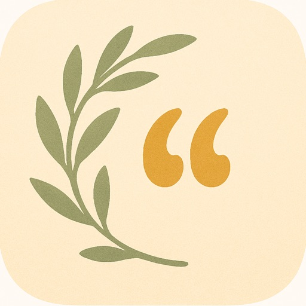
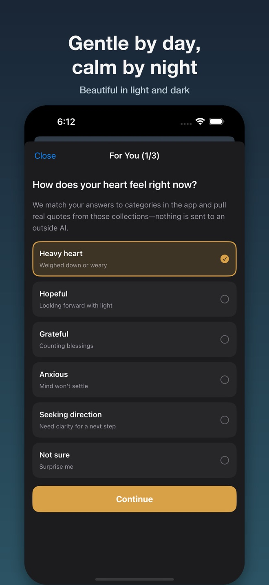
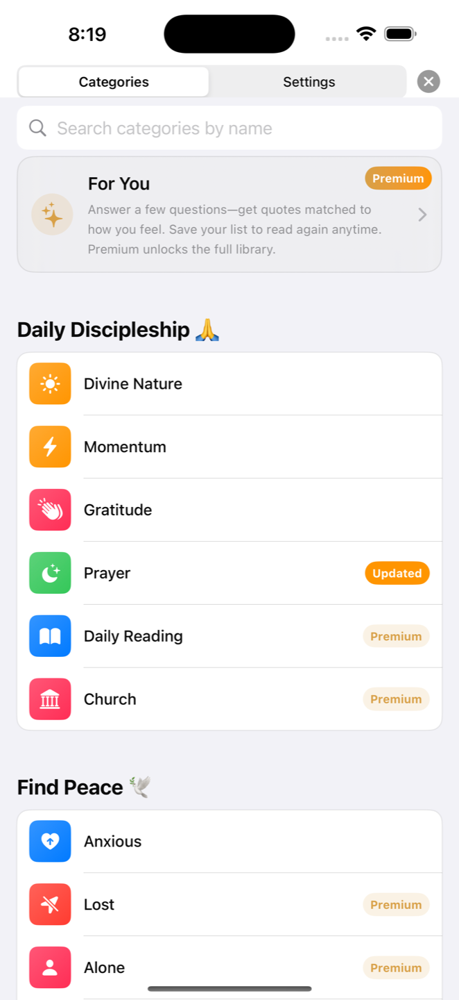
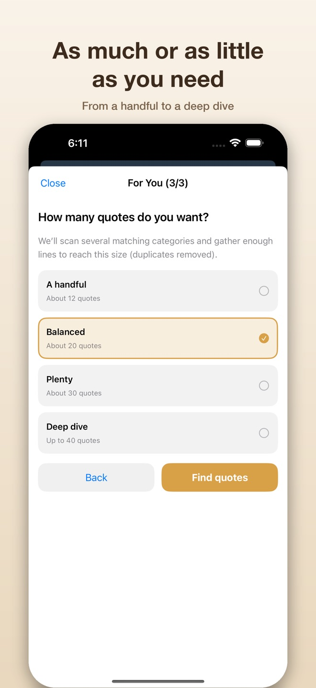
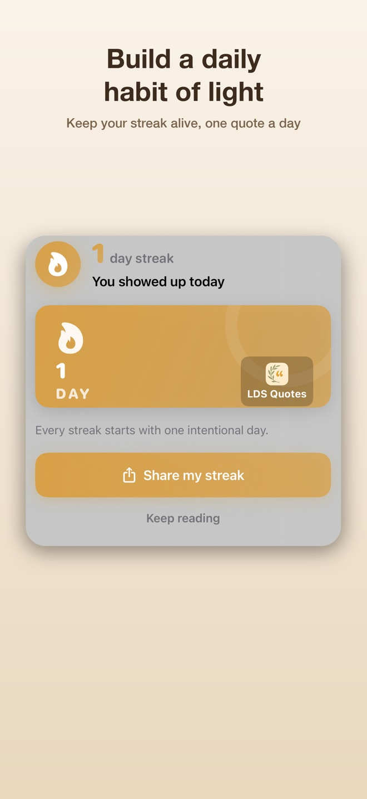

How to turn saved LDS quotes into a small weekly habit
A simple routine for revisiting favorite LDS quotes, checking their original context and choosing one thoughtful action.
Read the guide
LDS QUOTES · IPHONE
A little light for your day.
Daily inspiration for members of The Church of Jesus Christ of Latter-day Saints. A quiet moment. A fresh perspective.
Find encouragement that meets you where you are.
Daily Inspiration · Available in English

Find a quote for the moment you are in. Save the words you want to return to, or bring them onto your Home Screen.
Browse by topic or author. For You uses three short questions to suggest reading matched to how you feel.
Change fonts, colors, gradients, or photo backgrounds. Save a favorite and share a quote as a card.
Build a reading streak, set a daily reminder, or add a Home Screen widget.
A MOMENT TO READ
Everyday faith, in words you can read right here.
A simple routine for revisiting favorite LDS quotes, checking their original context and choosing one thoughtful action.
Read the guideA family-history page has a name and a date, but very little about the life between them. It is tempting to fill the silence with a story that sounds complete.
Read the reflectionA conversation ends, and you still disagree. Later, the other person’s name comes to mind while you are praying.
Read the reflectionSomeone thanks you for a lesson, a song, or a skill you shared. Before the words have settled, you hear yourself say, “It was nothing.”
Read the reflection
FIND A PLACE TO START
Search categories, explore themes such as gratitude and prayer, or browse by author.
Premium labels make paid categories visible before you open them. For You offers a preview; Premium lets you save personalized lists to your account.
Try the quick guideA MOMENT TO BEGIN
For study or talk preparation, check a quote’s original source and context before using it. The Church’s official General Conference library lets you find talks by topic, speaker or keyword.


ONE INTENTIONAL MOMENT
Read a little each day. Return to the words you saved when you need them.
GOOD TO KNOW
LDS Quotes: Daily Inspiration is an app for browsing uplifting Latter-day Saint quotes by topic or author, saving favorites, and sharing quote cards.
Answer three questions about how you feel and what you want to read. You can preview a matching selection; Premium saves personalized lists to your account and unlocks the full category library.
Yes. The app includes themes, fonts, colors, gradients, and photo backgrounds, along with light and dark appearances.
Designed for iPhone with iOS 17.0 or later. The app is currently available in English.
The current app includes Home Screen widgets and daily reminders. Check the app for the available widget choices and settings.
The app is free to download, with free categories and a For You preview. Categories marked Premium and curated Premium themes require an upgrade. Premium also saves personalized For You lists to your account. Check the app for current access and purchase options.
Email kelvin.vins@gmail.com for app support. For purchase issues, include the problem and app version, without sending passwords or payment details.
A LITTLE LIGHT, IN YOUR FEED
See a preview of recent LDS Quotes posts, with the original artwork and a path to the full conversation.
The preview loads automatically from Instagram when you visit this page. Instagram receives the request and may process browser/network information and use cookies. Its preview shows up to six recent posts; updates and availability are controlled by Instagram.
View LDS Quotes on Instagram
LDS Quotes is an independent app, not affiliated with or endorsed by The Church of Jesus Christ of Latter-day Saints.
A LITTLE LIGHT, IN YOUR FEED
Follow LDS Quotes.
Find quotes and thoughtful reflections on our social channels.